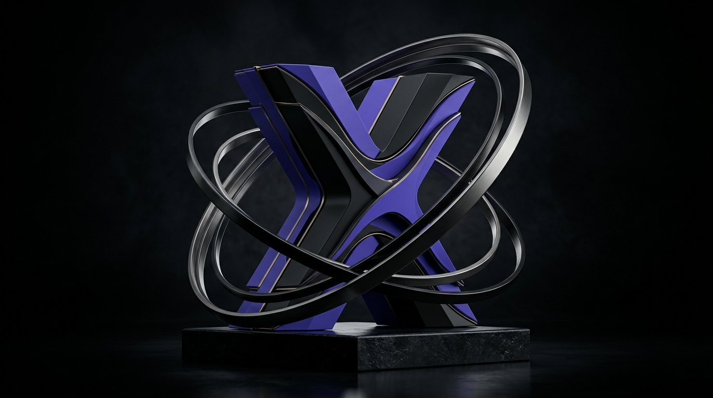

НАКАПЛИВАЙ
Кэшбэк начисляется, когда заказ одновременно отмечен доставленным и оплаченным. Основа расчёта — товары, оплаченные деньгами; доставка не учитывается.

BIORYX Club объединяет заказы, баллы и предложения в одном месте. Каждый шаг к цели — в твоём ритме.
Войди в кабинет через клиентского Telegram-бота, чтобы видеть привязанные заказы, баллы и предложения своего уровня.
Кэшбэк начисляется, когда заказ одновременно отмечен доставленным и оплаченным. Основа расчёта — товары, оплаченные деньгами; доставка не учитывается.
1 балл равен 1 ₽. Доступное количество баллов и действующий лимит списания ты увидишь при оформлении после входа.
Смотри историю баллов, уровень и заказы в кабинете. Акции и клубные цены могут зависеть от твоего уровня.
При изменении статуса заказа ранее начисленные или списанные баллы могут корректироваться. Условия клуба и уровней редактируются магазином; актуальные значения отображаются выше. Старые гостевые заказы автоматически не привязываются к профилю.
ВОЙТИ В КАБИНЕТ ↗Напиши нам, если нужна помощь со входом, заказом или условиями клуба.